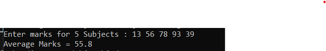

Practice program 41 - Java program to calculate average marks
// java program to find average of marks..
import java.util.Scanner;
class AverageMarks
{
public static void main(String args[])
{
// Declaring avriables..
int mark[] = new int[5],i;
float sum=0,avg;
// Taking values from user...
Scanner scan = new Scanner(System.in);
System.out.print("Enter marks for 5 Subjects : ");
for(i=0; i<5; i++)
{
mark[i] = scan.nextInt();
// calculating sum
sum = sum + mark[i];
}
// Finding avergae..
avg= sum/5;
/// Printing the result...
System.out.print("Average Marks = " +avg);
}
}
Output
